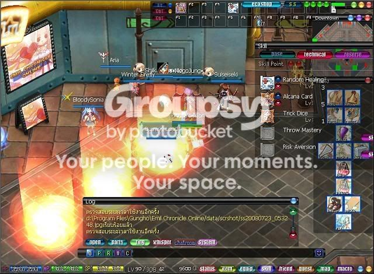

หน้า 28 จากทั้งหมด 36

โพสต์แล้ว:
พฤหัสฯ. 26 มิ.ย. 2008 11:50 pmโดย ECO
อันนี้แล้วแต่ดวงนะครับ
ตัวแรกของผมใช้เวลา20กว่านาที
ตัวที่สองของผม ตีตัวเดียวตกเลย(กุญแจอ่ะ)
แต่กรณีคุณนี้.... ไหงมันไม่ตกเลยหละนั่น- -
ตีโหดจริงๆ นาทีละ 1 ตัวด้วยหละมั้ง
นานเกินไปจริงๆ
โพสต์แล้ว:
ศุกร์ 27 มิ.ย. 2008 10:34 amโดย ECO
สู้ๆ ครับ เราตีอยู่เกือบชั่วโมงเหมือนกัน :oops:
รอนานมาก จนเปิดอีกจอทำไรไปจนเสร็จมันก็ยังไม่ยอมดรอบ
เอาค้อนโบลว์ก็แล้ว ทุบธรรมดาก็แล้ว มือเปล่าก็แล้ว มันก็ไม่ดรอบซักที TT
โพสต์แล้ว:
ศุกร์ 27 มิ.ย. 2008 10:48 amโดย ECO
ผมก็เล่นพ่อค้าอีกคนหนึ่งกำลังหาqueen gambler อยู่
แล้วจะบอกทำไมไม่มีใครเค้าอยากรู้หรอก :oops:
โพสต์แล้ว:
ศุกร์ 27 มิ.ย. 2008 9:46 pmโดย ECO
เอาทหารช่วยตีสิ :P
ครั้งแรกที่ทำ ราวๆ 12 รอบได้
โพสต์แล้ว:
เสาร์ 28 มิ.ย. 2008 11:11 pmโดย ECO
สายปาไพ่มันไม่เหนื่อยเท่า Riot หรอก หึหึ
Atk มันสูงกว่ากัน
ฆ่า Jail Guard ได้สะบายๆ
โอกาสดรอปนั้น "แล้วแต่ดวง"
เราเล่นมา 4-5 ตัว
เปลี่ยนๆมา ไม่เคยต่ำกว่า 15 นาทีสักตัว
โพสต์แล้ว:
จันทร์ 30 มิ.ย. 2008 8:00 amโดย ECO
ตอนเปลี่ยนเป็นสาย mag
เอาสกอเข้าไปยิง 2 ม้วนถ้วน ตก
โพสต์แล้ว:
จันทร์ 30 มิ.ย. 2008 1:20 pmโดย ECO
เอาจนได้- - เปลี่ยนแบบเดียวกันเดะ (ตัวที่2ของผม)
อ่านเรื่องสกอเวทย์ รู้สึกเจ็บใจขึ้นมาทันที
ไอ้เราก็เห็นว่าเกมเบิลตัวแรกที่เปลี่ยนสาย str นั่งหวดมันอยู่20นาทีกว่าจะมีตก
เกมเบิลตัวที่สอง เป็นสายMag เลยแบกทั้ง สกอ โกลบ กับ บลาส
ไปเต็มที่(เยอะมากๆ) ยิงยังไม่ทันหมดม้วนแรกเลย
กุญแจตกแล้ว- - ไอ้สกอที่เหลือนี้หมดอารมณ์เลย
คุ้นๆ ว่าวันนั้นอุดหนุนร้านอิตาต่อมาด้วยส่วนนึง๕๕๕
โพสต์แล้ว:
จันทร์ 30 มิ.ย. 2008 4:40 pmโดย ECO
krittakorn เขียน:เอาจนได้- - เปลี่ยนแบบเดียวกันเดะ (ตัวที่2ของผม)
อ่านเรื่องสกอเวทย์ รู้สึกเจ็บใจขึ้นมาทันที
ไอ้เราก็เห็นว่าเกมเบิลตัวแรกที่เปลี่ยนสาย str นั่งหวดมันอยู่20นาทีกว่าจะมีตก
เกมเบิลตัวที่สอง เป็นสายMag เลยแบกทั้ง สกอ โกลบ กับ บลาส
ไปเต็มที่(เยอะมากๆ) ยิงยังไม่ทันหมดม้วนแรกเลย
กุญแจตกแล้ว- - ไอ้สกอที่เหลือนี้หมดอารมณ์เลย
คุ้นๆ ว่าวันนั้นอุดหนุนร้านอิตาต่อมาด้วยส่วนนึง๕๕๕
เอามั่ง
ตอนแรกแบก storm เข้าไป ยิงจนจะหมด ไม่ตกสักที
แค้นจัด ออกมาทำโกลบ 10 ม้วน
ยิงไปไมุ่ถึงม้วนตก ยังเหลือค้างตัว ณ จนบัดนี้
โพสต์แล้ว:
ศุกร์ 11 ก.ค. 2008 4:06 pmโดย ECO
รบกวน ใครที่เล่น สายกระเป่าฟาด(สกิล45 เทรดเดอร์) ว่า ควรใช้ กระเป๋า+คริ รึว่า+พาว ถึงจะคุ้มค่ากว่างับ
ใครเคยลองรึว่ามีประสบการณ์ รบกวนบอกทีครับ
ป.ล ตอนนี้ใช้ เป๋าทอง+7คริ อยุ่ อยากรุ้ว่า+พาวจะเจ๋งก่ารึเปล่า
โพสต์แล้ว:
อังคาร 15 ก.ค. 2008 12:54 amโดย ECO
สายกระเป๋ามิรู้
สายไหนๆก็ไม่รู้
แต่นี้กะเข้ามาถามสายปาไพ่ :oops:
อยากรู้ว่าจ๊อบ 30 มันแรงม๊ายย
Card Boomerang นะ แล้วก็ One or Eight ด้วยงิ
แล้วสเตตัสควรอัพไรมั้ง
เพราะนี้ก็สายมิกซ์ Agi Vit มาก่อนอยู่แล้ว อัพ str เพิ่มมาปาไพ่ธรรมดาทีละ 40 
Coin Shoot ด้วย (ทีละ 500จี :x แพงเกิน)
โพสต์แล้ว:
อังคาร 15 ก.ค. 2008 1:29 amโดย ECO
Card Boomerang มีดีแค่ปาโดยไม่เสียไพ่
มีระยะเวลาร่ายด้วย(ค่อนข้างน้อย เพราะAgiก็ต้องเยอะกันอยู่แล้ว)
ความแรงก็ไม่ได้แรงอะไรมากมายครับ
ไม่ต่างจากปาธรรมดาเท่าไหร่ครับ
นำไปใช้ก็ตามแต่คนละกัน
One or Eight ทดลองแล้วตอนรีฟรีไม่มีSoul str
จัดว่าเป็นสกิวทีแรงทีเดียว เกิน2Kป่าวไม่รู้(ลืม- -)
สาเหตุที่ทำให้ลืมคือ พอใช้ไปเกิดซวยเลือดตัวเองลดแทนจะตายเอา
ไหนจะติดสตันแบบนานโคตรๆ สรุปเป็นสกิวที่ไม่คุ้มเอาเสียเลย
เพิ่มเติมส่วนตัว:จริงๆอยากให้สกิวนี้มันแรงเว่อๆหน่อย จะได้ไว้คอมโบกะอาชีพอื่นได้บ้าง- -
ข้อดี : ถ้ามันล้มเหลวแล้วเลือดเหลือ 1 เมื่อไหร่ ใช้สกิวหลังจากนั้น
ถึงจะล้มเหลวยังไงเลือดมันก็ไม่ลดไปกว่านี้ละ(สาบานได้ว่าข้อดี)
Coin Shoot ผมว่าเป็นสกิวที่ดีน่ะ แต่ดันทะลึ่งเสียตังไม่คุ้มกับดาเมจเลย- -
(ตกลงมันสกิวดีไหมหละนั่น)
จะปาไพ่ก็เอาเป็นสายไพ่ล้วนดีกว่ามั้ง Str> agi int
เลือกมอนตีเอาตัวไหนถึกก็ไม่ต้องไปยุ่งกะมัน
แต่ถ้าจะมิกซ์ยังไงก็ควรจะมีโซลStr 3ตัวอ่ะจะได้พอหากินได้
แต่ถ้าอัพstatไปเล่นNVNก็อีกเรื่องละกัน ให้ความเห็นมิได้ :wink:
โพสต์แล้ว:
ศุกร์ 18 ก.ค. 2008 6:58 pmโดย ECO
Reven เขียน:รบกวน ใครที่เล่น สายกระเป่าฟาด(สกิล45 เทรดเดอร์) ว่า ควรใช้ กระเป๋า+คริ รึว่า+พาว ถึงจะคุ้มค่ากว่างับ
ใครเคยลองรึว่ามีประสบการณ์ รบกวนบอกทีครับ
ป.ล ตอนนี้ใช้ เป๋าทอง+7คริ อยุ่ อยากรุ้ว่า+พาวจะเจ๋งก่ารึเปล่า
ผมใช้+9คริ เป๋าเงิน คริมันสะใจดีคับ
atk เงินกะทองต่างกันไม่เยอะ
โพสต์แล้ว:
จันทร์ 21 ก.ค. 2008 10:05 pmโดย ECO
ข้าวปั้นงิ เขียน:ขอวิธีเปลี่ยน Gambler หน่อยสิค่า...
ขอบคุณมากคร่า....>< รอน่ะค่ะ*-*
*-*
[GM]เป๊ปเป้ เขียน: :oops: สำหรับอาชีพ Trader ที่ต้องการ Switch Job ไปเป็นอาชีพ Gambler นั้น
ขั้นตอนการ Switch จะพิเศษกว่าอาชีพอื่นๆ ดังนี้ค่ะ
:arrow:
อ่านข้อมูลเพิ่มเติม ได้ที่นี่ค่ะ
โพสต์แล้ว:
พุธ 23 ก.ค. 2008 6:00 amโดย ECO
แม่ค้าเราก้อมีสกิลเท่ๆไม่แพ้ชาวบ้านนะ :oops:




โพสต์แล้ว:
พุธ 23 ก.ค. 2008 6:20 amโดย ECO
แล้วหนังสือ แม่ค้าก็จะขายดีก็คราวนี้แหละ >,<